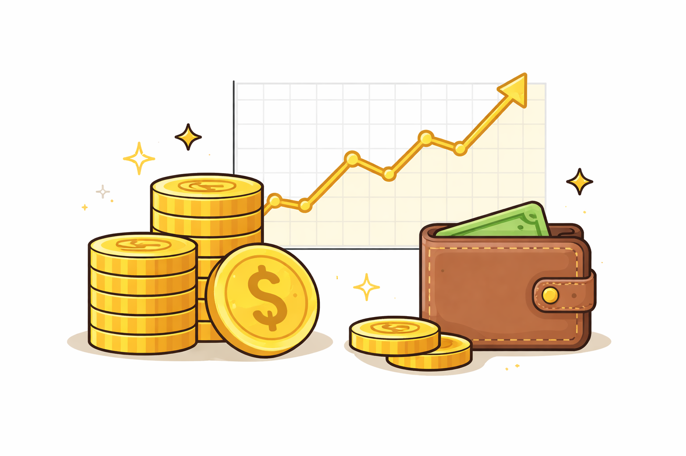

What Can You Automate?
Pre-built templates for common automation tasks. One click to create.

Web Browsing & Social Media
Safari-based agents that browse sites, track changes, and engage with content.
X/Twitter Engagement AgentMonitor posts, draft replies, send digest to Telegram
0 9 * * *
# X/Twitter Engagement Agent
## Steps
1. Open Safari and navigate to x.com/search
2. Search for posts about [YOUR_TOPIC]
3. Draft short, authentic reply suggestions
4. Send digest to Telegram with top 5 postsReddit Research AgentBrowse subreddits, summarize discussions and sentiment
0 8 * * 1
# Reddit Research Agent
## Steps
1. Open Safari and navigate to reddit.com/r/[YOUR_SUBREDDIT]
2. Sort by "Hot" and scan the top 20 posts
3. Read top comments on interesting threads
4. Compile weekly briefing with themes and sentimentCompetitor Website MonitorTrack changes on competitor sites, report new features
0 7 * * 1,4
# Competitor Website Monitor
## Steps
1. Open Safari and navigate to [YOUR_WEBSITE]
2. Check homepage, pricing, blog, product pages
3. Compare with previous observations
4. Document changes and competitive implicationsLinkedIn EngagementFind relevant posts, draft thoughtful comments
0 10 * * 1,3,5
# LinkedIn Engagement Agent
## Steps
1. Open Safari and navigate to linkedin.com/feed
2. Search for posts about [YOUR_TOPIC]
3. Identify 5 high-quality posts from thought leaders
4. Draft genuine, insightful comments for eachNews DigestBrowse news sites, compile daily summary
0 7 * * *
# Daily News Digest
## Steps
1. Check Hacker News, TechCrunch, Ars Technica
2. Filter for stories related to [YOUR_TOPIC]
3. Summarize each: title, source, 2-sentence summary
4. Send morning briefing to TelegramProduct Hunt MonitorTrack new launches, report interesting products
0 18 * * *
# Product Hunt Monitor
## Steps
1. Open Safari and navigate to producthunt.com
2. Review today's top 10 launched products
3. Note name, tagline, category, upvote count
4. Identify products relevant to your interests
Code & Development
Claude Code agents for PR reviews, testing, refactoring, and documentation.
PR Review AgentReview open PRs, suggest improvements and catch issues
0 9 * * 1-5
# PR Review Agent
## Steps
1. Run `gh pr list --state open`
2. Read each diff with `gh pr diff`
3. Check for bugs, security issues, missing tests
4. Draft review comments and summarizeTest WriterGenerate tests for uncovered code paths
0 14 * * 5
# Test Writer Agent
## Steps
1. Check test coverage if configured
2. Identify files with low or no coverage
3. Generate tests: happy paths, edge cases, errors
4. Follow project's existing test patternsDependency AuditorCheck outdated packages, security advisories
0 6 * * 1
# Dependency Auditor
## Steps
1. Run `npm outdated` / `cargo outdated`
2. Run `npm audit` / `cargo audit`
3. Categorize updates by severity
4. Note breaking changes in major updatesCode Refactoring AgentFind code smells, propose improvements
0 10 * * 5
# Code Refactoring Agent
## Steps
1. Scan for functions >50 lines, deep nesting
2. Find duplicated code blocks, unused imports
3. Check for stale TODO/FIXME comments
4. Propose fixes prioritized by impactDocumentation UpdaterScan changes, update docs and READMEs
0 16 * * 5
# Documentation Updater
## Steps
1. Check recent commits: `git log --oneline -20`
2. Identify changes affecting documented behavior
3. Update README.md and docs/ accordingly
4. Check for broken links or outdated examplesContent & Marketing
Automate blog drafts, social planning, SEO audits, and changelogs.
Blog Post DrafterResearch and draft blog posts with outlines
0 9 * * 1
# Blog Post Drafter
## Steps
1. Research [YOUR_TOPIC] via web browsing
2. Find unique angles not covered elsewhere
3. Create outline with 3 headline options
4. Draft full post (800-1200 words)Social Media Content PlannerGenerate a week of content ideas with drafts
0 9 * * 0
# Social Media Content Planner
## Steps
1. Review what performed well recently
2. Research trending industry topics
3. Generate 7 post ideas (one per day)
4. Draft copy for Twitter and LinkedInSEO AnalyzerAudit pages, suggest search ranking improvements
0 6 * * 1
# SEO Analyzer
## Steps
1. Open Safari and navigate to [YOUR_WEBSITE]
2. Check title tags, meta descriptions, headings
3. Audit image alt text and internal linking
4. Compare with top competitor pagesChangelog GeneratorCompile release notes from recent commits
0 17 * * 5
# Changelog Generator
## Steps
1. Get commits since last tag
2. Get merged PRs: `gh pr list --state merged`
3. Categorize: features, fixes, improvements
4. Write human-readable changelog entries
Data & Research
Market intelligence, price tracking, paper digests, and trend analysis.
Market Research AgentBrowse industry sites, compile competitive intelligence
0 8 * * 1
# Market Research Agent
## Steps
1. Browse industry news sites and blogs
2. Track new entrants, funding rounds, acquisitions
3. Monitor technology trends and sentiment
4. Synthesize into actionable weekly briefingPrice TrackerMonitor product prices, alert on changes
0 6 * * *
# Price Tracker
## Steps
1. Open Safari and check pricing sources
2. Record current prices for [YOUR_PRODUCT]
3. Compare with previous run's prices
4. Alert if price dropped more than 5%Academic Paper DigestSearch for papers, create summaries
0 8 * * 1
# Academic Paper Digest
## Steps
1. Search arxiv.org, Google Scholar, Semantic Scholar
2. Filter for papers from the last month
3. Select top 5 most relevant papers
4. Summarize key contributions for eachJob Market ScannerTrack job postings, summarize trends
0 7 * * 1
# Job Market Scanner
## Steps
1. Check LinkedIn Jobs, HN "Who is Hiring"
2. Track posting count trends, tech stacks
3. Note salary ranges and remote ratios
4. Identify new skills appearing in requirements
DevOps & Monitoring
Server health checks, backup verification, SSL monitoring, and log analysis.
Server Health CheckRun diagnostics, report status and anomalies
0 */4 * * *
# Server Health Check
## Steps
1. Check CPU, memory, disk usage
2. Verify Docker containers and key services
3. Test DNS resolution and endpoint health
4. Report status: OK / WARNING / CRITICALBackup VerifierVerify backups exist, are recent, have correct checksums
0 5 * * *
# Backup Verifier
## Steps
1. Check local and remote backup locations
2. Verify files exist and are recent (<24h)
3. Check file sizes (not 0 bytes)
4. Verify checksums if availableSSL Certificate MonitorCheck cert expiry dates, alert if expiring soon
0 6 * * 1
# SSL Certificate Monitor
## Steps
1. For each domain, check certificate via openssl
2. Parse expiry dates, calculate days remaining
3. Flag certs expiring within 30 days
4. Status: OK / WARNING (<30d) / CRITICAL (<7d)Log AnalyzerParse logs, identify errors and anomalies
0 8 * * *
# Log Analyzer
## Steps
1. Read recent log files (last 24 hours)
2. Categorize: errors, warnings, slow operations
3. Group similar errors together
4. Identify new errors not seen before

4 templates
Finance & Crypto
DeFi yields, portfolio tracking, stablecoin monitoring, and airdrop alerts.
DeFi Yield MonitorCheck yield rates across protocols, report via Telegram
0 8 * * *
# DeFi Yield Monitor
## Steps
1. Check DeFiLlama, Aave, Compound, Lido
2. Record current rates for tracked assets
3. Compare with previous run's rates
4. Flag significant changes (>0.5% APY shift)Portfolio TrackerAggregate positions, daily P&L summary
0 20 * * *
# Portfolio Tracker
## Steps
1. Check current prices for tracked assets
2. Calculate position values
3. Compare with yesterday's values
4. Generate daily P&L summary with top moversStablecoin Rate CheckerMonitor rates and peg stability
0 */6 * * *
# Stablecoin Rate Checker
## Steps
1. Check peg prices: USDT, USDC, DAI, FRAX
2. Check lending rates across platforms
3. Flag depegging events (>0.5% deviation)
4. Note arbitrage opportunitiesAirdrop TrackerTrack upcoming airdrop eligibility
0 9 * * 1,4
# Airdrop Tracker
## Steps
1. Check airdrop aggregator sites
2. Filter for upcoming confirmed/rumored drops
3. Check eligibility criteria for each
4. List required actions for this week
Personal Productivity
Email drafting, weekly reviews, and structured learning research.
Email DrafterReview flagged emails, draft responses
0 8 * * 1-5
# Email Drafter
## Steps
1. Check .cwt/inbox/ for new email files
2. Understand context and what's being asked
3. Draft professional response, match tone
4. Save drafts to .cwt/drafts/Weekly Review GeneratorSummarize week's work from git and tasks
0 17 * * 5
# Weekly Review Generator
## Steps
1. Check `git log --since="7 days ago" --all`
2. Count commits, files changed, lines added
3. Identify key themes and accomplishments
4. Generate next week's prioritiesLearning AgentResearch a topic, compile study notes
0 10 * * 6
# Learning Agent
## Steps
1. Research [YOUR_TOPIC] via docs and tutorials
2. Organize: core concepts, techniques, pitfalls
3. Gather community discussions and resources
4. Create structured study summary